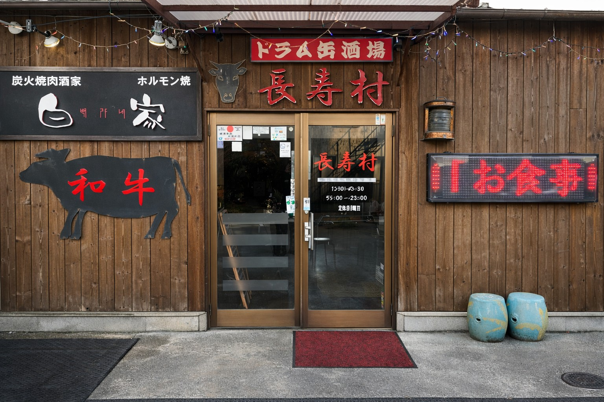
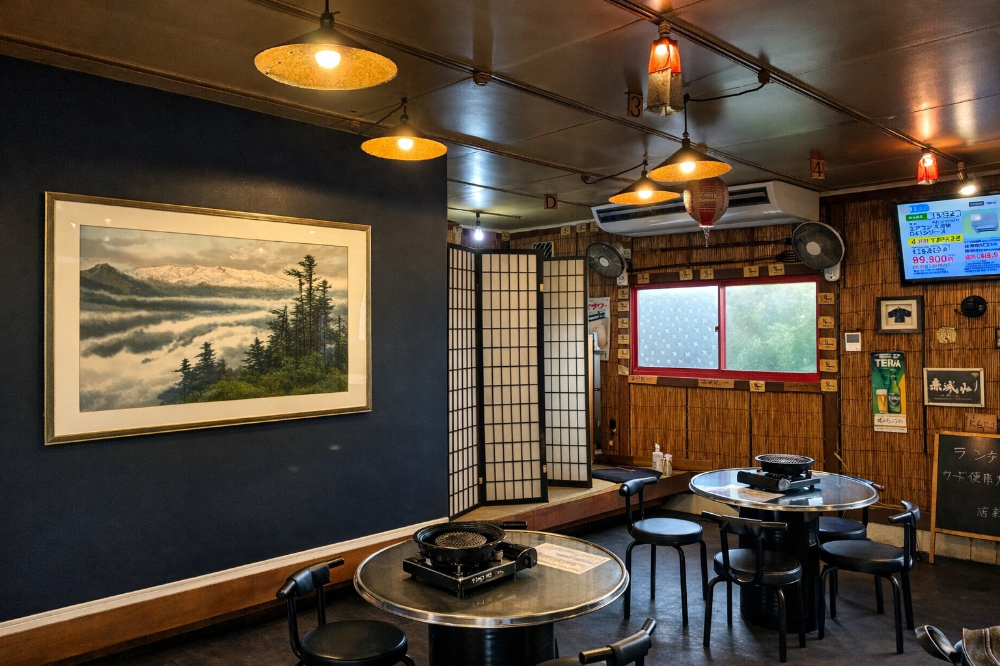

ドラム缶酒場 — 大船 創業60年
幻の虎マッコリと国産黒川牛。
60年以上受け継がれてきた伝統の味を、
大船でお楽しみください。

一般にはほとんど流通しない希少なお酒「虎マッコリ」。大船エリアで飲めるのは長寿村だけ。厳選した国産黒川牛と新鮮なホルモン、親の代から受け継ぐ60年の伝統の味とともにお楽しみください。

親の代から60年以上受け継いできた仕込みと味付け。厳選した国産黒川牛と、その日に仕入れた新鮮なホルモン。そして大船エリアでここだけでしか飲めない「幻の虎マッコリ」。変わらない美味しさで、地域のお客様に愛され続けています。
一般にはほとんど流通しない希少なお酒。大船エリアで飲めるのは長寿村だけ。
その日に仕入れた新鮮な食材をそのまま提供。焼肉の旨みを最大限に楽しめる品質を大切にしています。
親の代から受け継がれてきた仕込みと味付け。地域に愛され続ける大船の老舗焼肉店です。
焼肉・お酒・会話をゆっくり楽しめる空間をご用意。ワンドリンク以上のご注文をお願いしております。
近年少なくなっている店内喫煙可能なお店。お酒を楽しみながら、ゆっくり食事とタバコをご堪能いただけます。
店内にはテレビがあり、スポーツ観戦をしながら焼肉とお酒を楽しめます。仲間同士の飲み会に大人気です。
| 店名 | 焼肉酒家 長寿村 |
|---|---|
| 電話 | 0467-44-0440 |
| 営業時間 |
火・水・木 11:30〜14:00 / 17:00〜23:00 金 11:30〜15:00 / 17:00〜23:00 土・日 15:00〜23:00 |
| 定休日 | 月曜日 |
| アクセス | 大船駅から徒歩10分 |
| ご予約 |
お電話にてご予約ください ※ 90%以上のお客様が予約でのご来店です |
RESERVATION
仕入れ状況や混雑状況により当日ご案内が難しい場合もございます。
事前のご予約をおすすめいたします。
月曜日定休 / 90%以上が予約のお客様です